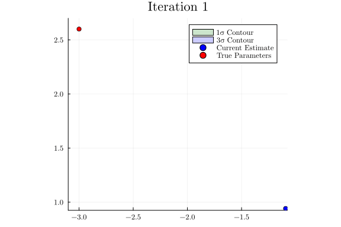

This example was automatically generated from a Jupyter notebook in the RxInferExamples.jl repository.
We welcome and encourage contributions! You can help by:
- Improving this example
- Creating new examples
- Reporting issues or bugs
- Suggesting enhancements
Visit our GitHub repository to get started. Together we can make RxInfer.jl even better! 💪
Bayesian Binomial Regression
This notebook is an introductory tutorial to Bayesian binomial regression with RxInfer.
using RxInfer, ReactiveMP, Random, Plots, StableRNGs, LinearAlgebra, StatsPlots, LaTeXStringsLikelihood Specification
For observations $y_i$ with predictors $\mathbf{x}_i$, Binomial regression models the number of successes $y_i$ as a function of the predictors $\mathbf{x}_i$ and the regression coefficients $\boldsymbol{\beta}$
\[\begin{equation} y_i \sim \text{Binomial}(n_i, p_i)\,, \end{equation}\]
where:
\[y_i\]
is the number of successes, $n_i$ is the number of trials, $p_i$ is the probability of success. The probability $p_i$ is linked to the predictors through the logistic function:
\[\begin{equation} p_i = \frac{1}{1 + e^{-\mathbf{x}_i^T\boldsymbol{\beta}}} \end{equation}\]
Prior Distributions
We specify priors for the regression coefficients:
\[\begin{equation} \boldsymbol{\beta} \sim \mathcal{N}_{\xi}(\boldsymbol{\xi}, \boldsymbol{\Lambda}) \end{equation}\]
as a Normal distribution in precision-weighted mean form.
Model Specification
The likelihood and the prior distributions form the probabilistic model
\[p(y, x, \beta, n) = p(\beta) \prod_{i=1}^N p(y_i \mid x_i, \beta, n_i),\]
where the goal is to infer the posterior distributions $p(\beta \mid y, x, n)$. Due to logistic link function, the posterior distribution is not conjugate to the prior distribution. This means that we need to use a more complex inference algorithm to infer the posterior distribution. Before dwelling into the details of the inference algorithm, let's first generate some synthetic data to work with.
function generate_synthetic_binomial_data(
n_samples::Int,
true_beta::Vector{Float64};
seed::Int=42
)
n_features = length(true_beta)
rng = StableRNG(seed)
X = randn(rng, n_samples, n_features)
n_trials = rand(rng, 5:20, n_samples)
logits = X * true_beta
probs = 1 ./ (1 .+ exp.(-logits))
y = [rand(rng, Binomial(n_trials[i], probs[i])) for i in 1:n_samples]
return X, y, n_trials, probs
end
n_samples = 10000
true_beta = [-3.0 , 2.6]
X, y, n_trials,probs = generate_synthetic_binomial_data(n_samples, true_beta);
X = [collect(row) for row in eachrow(X)];We generate X as the design matrix and y as the number of successes and n_trials as the number of trials. Next task is to define the graphical model. RxInfer provides a BinomialPolya factor node that is a combination of a Binomial distribution and a PolyaGamma distribution introduced in [1]. The BinomialPolya factor node is used to model the likelihood of the binomial distribution.
Due to non-conjugacy of the likelihood and the prior distribution, we need to use a more complex inference algorithm. RxInfer provides an Expectation Propagation (EP) [2] algorithm to infer the posterior distribution. Due to EP's approximation, we need to specify an inbound message for the regression coefficients while using the BinomialPolya factor node. This feature is implemented in the dependencies keyword argument during the creation of the BinomialPolya factor node. ReactiveMP.jl provides a RequireMessageFunctionalDependencies type that is used to specify the inbound message for the regression coefficients β. Refer to the ReactiveMP.jl documentation for more information.
@model function binomial_model(prior_xi, prior_precision, n_trials, X, y)
β ~ MvNormalWeightedMeanPrecision(prior_xi, prior_precision)
for i in eachindex(y)
y[i] ~ BinomialPolya(X[i], n_trials[i], β) where {
dependencies = RequireMessageFunctionalDependencies(β = MvNormalWeightedMeanPrecision(prior_xi, prior_precision))
}
end
endThis example uses the precision-weighted mean parametrization (MvNormalWeightedMeanPrecision) of the Gaussian distribution for efficiency reasons. While this is less conventional than the standard mean-covariance form, the example would work equally well with any parametrization. The choice of parametrization mainly affects computational efficiency and numerical stability, not the underlying model or results.
Having specified the model, we can now utilize the infer function to infer the posterior distribution.
n_features = length(true_beta)
results = infer(
model = binomial_model(prior_xi = zeros(n_features), prior_precision = diageye(n_features),),
data = (X=X, y=y,n_trials=n_trials),
iterations = 30,
free_energy = true,
showprogress = true,
options = (
limit_stack_depth = 100, # to prevent stack-overflow errors
)
)Inference results:
Posteriors | available for (β)
Free Energy: | Real[21992.9, 16235.8, 13785.0, 12519.7, 11800.1, 1136
6.2, 11094.1, 10918.7, 10803.3, 10726.3 … 10561.6, 10560.6, 10559.9, 1055
9.4, 10559.0, 10558.8, 10558.6, 10558.5, 10558.4, 10558.3]We can now plot the free energy to see if the inference algorithm is converging.
plot(results.free_energy,fontfamily = "Computer Modern", label="Free Energy", xlabel="Iteration", ylabel="Free Energy", title="Free Energy Convergence")
Free energy is converging to a stable value, indicating that the inference algorithm is converging. Let's visualize the posterior distribution and how it compares to the true parameters.
# Create an animation showing how posterior evolves
anim = @animate for i in 1:length(results.posteriors[:β])
# Get posterior at current iteration
m_i = mean(results.posteriors[:β][i])
Σ_i = cov(results.posteriors[:β][i])
# Calculate dynamic limits based on current mean and covariance
# Add some padding (3 standard deviations) to ensure true parameters are visible
x_std = sqrt(Σ_i[1,1])
y_std = sqrt(Σ_i[2,2])
x_min = min(m_i[1] - 3*x_std, true_beta[1] - 0.1)
x_max = max(m_i[1] + 3*x_std, true_beta[1] + 0.1)
y_min = min(m_i[2] - 3*y_std, true_beta[2] - 0.1)
y_max = max(m_i[2] + 3*y_std, true_beta[2] + 0.1)
p = plot(xlims=(x_min, x_max), ylims=(y_min, y_max),
fontfamily = "Computer Modern",
title="Iteration $i", aspect_ratio=1)
# Plot confidence ellipses
covellipse!(m_i, Σ_i, n_std=1, label="1σ Contour", color=:green, fillalpha=0.2)
covellipse!(m_i, Σ_i, n_std=3, label="3σ Contour", color=:blue, fillalpha=0.2)
# Plot mean estimate and true parameters
scatter!([m_i[1]], [m_i[2]], label="Current Estimate", color=:blue)
scatter!([true_beta[1]], [true_beta[2]], label="True Parameters", color=:red)
end
# Save the animation as a GIF
gif(anim, "bayesian_regression_posterior.gif", fps=3)Plots.AnimatedGif("/home/runner/work/RxInferExamples.jl/RxInferExamples.jl/
docs/src/categories/basic_examples/bayesian_binomial_regression/bayesian_re
gression_posterior.gif")
We can perform prediction by augmenting the data with missing values. For that, we can create a new vector y_with_missing that contains missing values for the last 2000 samples.
y_with_missing = Vector{Union{Missing, Int}}(missing, n_samples)
for i in 1:n_samples
if i > 8000
y_with_missing[i] = missing
else
y_with_missing[i] = y[i]
end
endresults_with_missing = infer(
model = binomial_model(prior_xi = zeros(n_features), prior_precision = diageye(n_features),),
data = (X=X, y=y_with_missing,n_trials=n_trials),
iterations = 30,
showprogress = true,
options = (
limit_stack_depth = 100, # to prevent stack-overflow errors
)
)Inference results:
Posteriors | available for (β)
Predictions | available for (y)probs_prediction = map(d -> d.p,results_with_missing.predictions[:y][end][8000:end])
err = probs_prediction .- probs[8000:end]
mse = mean(err.^2)
println("Mean squared error: ", mse)Mean squared error: 3.541846183800687e-6function bin_predictions(true_probs, pred_probs; n_bins=20)
bins = range(0, 1, length=n_bins+1)
bin_means = Float64[]
bin_stds = Float64[]
bin_centers = Float64[]
for i in 1:n_bins
mask = (true_probs .>= bins[i]) .& (true_probs .< bins[i+1])
if any(mask)
push!(bin_means, mean(pred_probs[mask]))
push!(bin_stds, std(pred_probs[mask]))
push!(bin_centers, (bins[i] + bins[i+1])/2)
end
end
return bin_centers, bin_means, bin_stds
end
# Create the plot
bin_centers, bin_means, bin_stds = bin_predictions(probs[8000:end], probs_prediction)
p = plot(
xlabel = "True Probability",
ylabel = "Predicted Probability",
title = "Prediction Performance",
aspect_ratio = 1,
legend = :bottomright,
grid = true,
fontfamily = "Computer Modern",
dpi = 300
)
# Add perfect prediction line
plot!([0, 1], [0, 1],
label = "Perfect Prediction",
color = :black,
linestyle = :dash,
linewidth = 2
)
# Add scatter plot with reduced opacity and size
scatter!(
probs[8000:end],
probs_prediction,
label = "Individual Predictions",
alpha = 0.1, # Reduced opacity
color = :blue,
markersize = 1,
markerstrokewidth = 0
)
# Add binned means with error bars
scatter!(
bin_centers,
bin_means,
yerror = bin_stds,
label = "Binned Mean ± SD",
color = :red,
markersize = 4
)
annotate!(
0.05,
0.95,
text("MSE = $(round(mse, digits=8))", 8, :left, :top)
)
# Customize axes
plot!(
xlims = (0,1),
ylims = (0,1),
xticks = 0:0.2:1,
yticks = 0:0.2:1
)
References
[1] Polson, N. G., Scott, J. G., & Windle, J. (2013). Bayesian inference for logistic models using Polya-Gamma latent variables. Journal of the American Statistical Association, 108(1), 136-146.
[2] Minka, T. (2001). Expectation Propagation for approximate Bayesian inference. Uncertainty in Artificial Intelligence, 2, 362-369.
This example was automatically generated from a Jupyter notebook in the RxInferExamples.jl repository.
We welcome and encourage contributions! You can help by:
- Improving this example
- Creating new examples
- Reporting issues or bugs
- Suggesting enhancements
Visit our GitHub repository to get started. Together we can make RxInfer.jl even better! 💪
This example was executed in a clean, isolated environment. Below are the exact package versions used:
For reproducibility:
- Use the same package versions when running locally
- Report any issues with package compatibility
Status `/tmp/jl_A77yVv/Project.toml`
[b964fa9f] LaTeXStrings v1.4.0
[91a5bcdd] Plots v1.41.6
[a194aa59] ReactiveMP v5.6.5
[86711068] RxInfer v4.7.0
[860ef19b] StableRNGs v1.0.4
[f3b207a7] StatsPlots v0.15.8
[37e2e46d] LinearAlgebra v1.12.0
[9a3f8284] Random v1.11.0